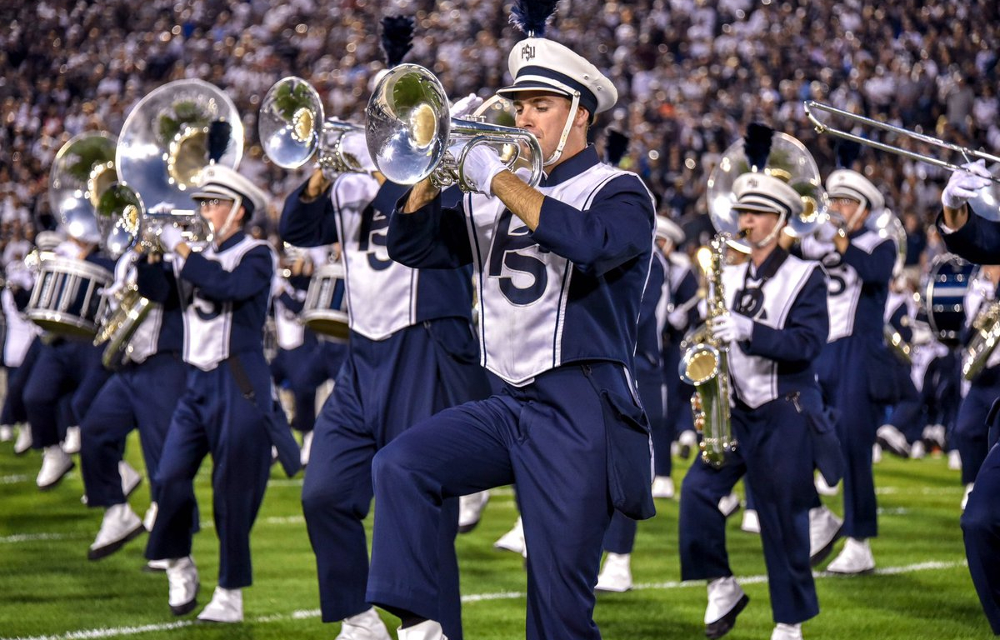

About
The goal of the Penn State Exploration Guide is to help anyone visiting or living in the State College area to find things that they like to do in the area. We know that their are a large variety of tastes and preferences, so we have broken up our ideas into different groups. This way no matter who you are or what you are interested in, our site should be able to help you find something you like in the State College area. Our categories are Adventure, Elderly, Adult, Family, Student, and Seasonal but feel free to look through any category as many activities are enjoyable for people of all kinds!
State College Destinations
If you want an experience in State College that you will never forget, look no further than THON. While it may only happen once a year, if you are able to make time during that weekend you won't regret it. When visiting you will be able to see the absolutly incredible atmosphere that is created by thousands of people all supporting the same great cause. And if you have the opportunity as a student, if you are able to participate especially as a dancer you will be thrown right into the action.
Game Day Ideas
Those who have true loyalty to our Nittany Lions are willing to support them anywhere, even at an away game! The team needs support wherever they go, even on the road. This not only includes the away games on the schedule during the regular season, but also a bowl game at the end of the season. This provides a great opportutnity for students to get off campus for a while, and gives anyone else an excuse to travel! It may seem crazy at first, but remember that you will at least always have the blue band to keep you company.
Outdoor Activities

One great idea for any Penn Stater with a sense of adventure is to hike mount nittany. You will not only be able to get some excersize and explore the mountain, but also take in an amazing view once you reach the top. If you just want to make it to the top and head back down, the hike will take you under 2 hours, and if you want to explore the entire mountain it will take you closer to 4 or 5. If you are looking for more information including trials, maps, photos, and parking information visit the mount nittany website which can be found here.
Nearby Options

Besides Mount Nittany, there is more mountain fun to be found right outside of Statecollege in Boalsburg. Tussey Mountain is located 10-15 minutes away from campus and is a great skiing destination. Tussey has even more to offer outside of the winter months as well. During the warmer months Tussey offers mini-golf, go-karting, a driving range, batting cages, fishing, and more. They also hold events like weddings, picnics, and movie nights during the summer. For more information click here to visit their website.